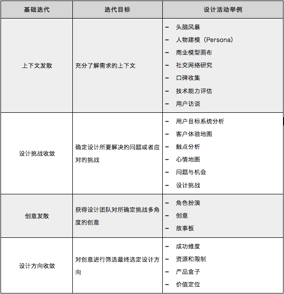
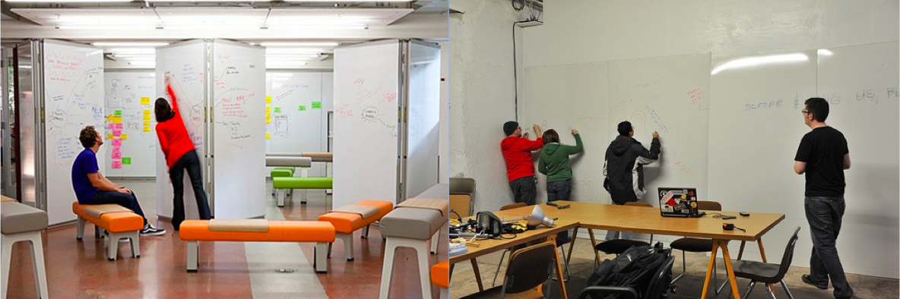
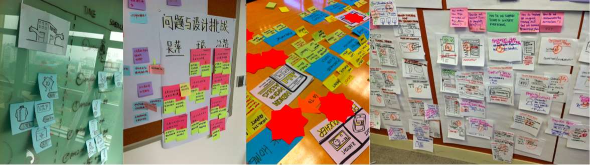
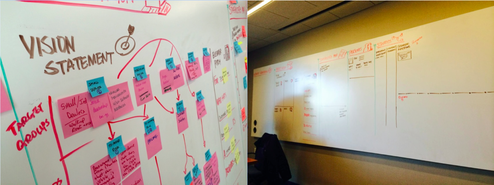
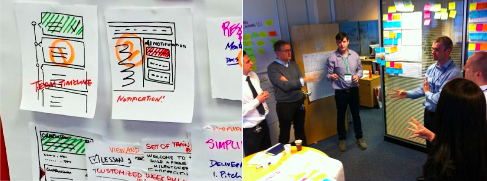
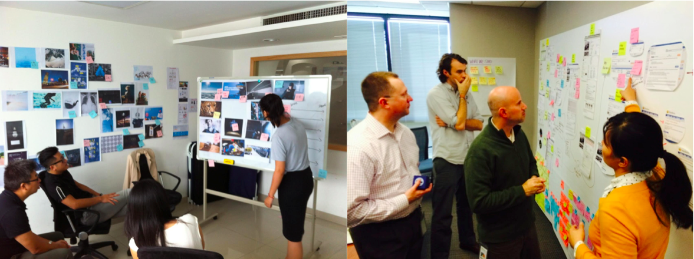
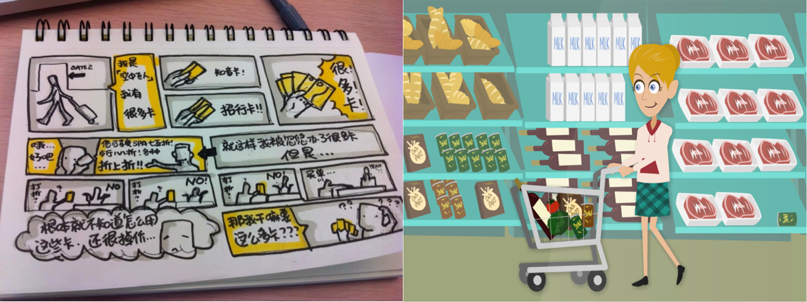
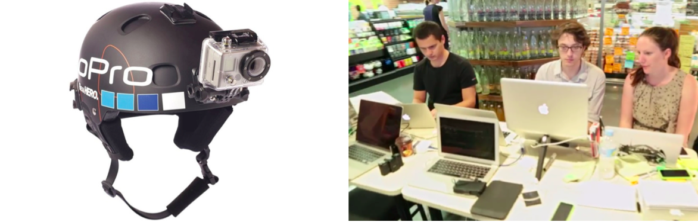
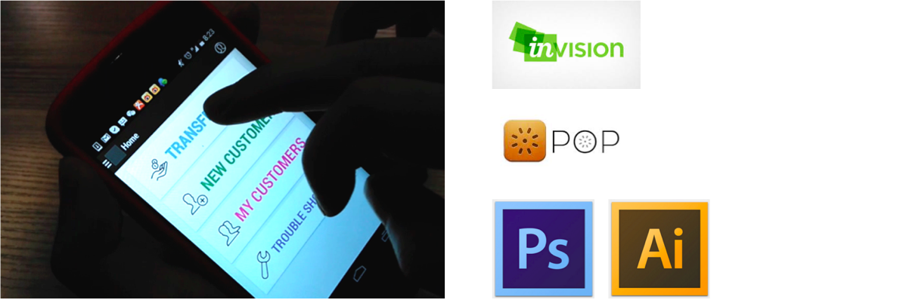

注：此文发表于2014年UXPA文集
具有互动式的设计工作坊（Design Workshop）是敏捷体验设计中至关重要的一环，学习设计一个参与度高、有趣有效、以及能够产出关键产出物的工作坊成为敏捷体验设计师的重要一课。
敏捷体验设计同时具备敏捷的特性之一，即：个体和交互胜于流程和工具。因此设计工作坊本身也不应该拘泥于形式与流程一尘不变，而是随着客户上下文的不同而变化。
任何一个设计工作坊的核心逻辑都是相当一致的，只有把握好这个逻辑才能真正做到形神皆似，也更能够根据不同情况进行设计。那么，一个具有敏捷特质的设计工作坊有哪些核心逻辑呢？
- 它是由阶段性目标组成的一系列设计活动；
- 它是鼓励互动的；
- 它是有决策过程的；
- 它是有产出物的；
基于这个逻辑，设计工作坊的设计必然包括以下几个思考：
- 如何确定阶段性目标？
- 如何使用一些手段让它产生互动？
- 如何帮助决策？
- 如何展示产出物？
以下将分别进行讨论：
阶段性目标
具有敏捷特性的设计工作坊自然融入了敏捷思想中“小目标，快速演进”的特点。在敏捷软件开发中，短周期、并具有共同目标的实践是迭代开发方法的精髓，例如在Scrum中的“冲刺（Sprint）”——一支团队共同努力完成一个只有两周的工作。
在这里，这个工作周期可能更短至3个小时。每一次团队协作的共同目标都是一个“短、明确、有产出物”的活动，这保证设计团队的所有人在固定时间内保持充分的集中力，保证设计产出物不断产出，而不是集中在最后。
通常，我们按照设计思维中所定义的“发散收敛”模型，定义出最普遍的一个设计框架，即在进入细节设计前，把一个设计项目分作4个基础迭代，它们分别是：
- 发散创立上下文
- 收敛集中设计挑战
- 发散收集创意
- 收敛并确定设计方向
而每个基础迭代所期待实现的阶段性目标是：
- 充分了解需求的上下文
- 确定设计所要解决的问题或者应对的挑战
- 获得设计团队对所确定挑战多角度的创意
- 对创意进行筛选最终选定设计方向
当我们让团队每位成员，了解到我们的基础设计迭代，接下来便是根据现实情况在这个框架中添入合适的设计活动。下表是我们通常使用的设计活动：

而每个设计活动都会在由团队集体协作产生一系列设计产出物，这些产出物都会在团队中用演示（Showcase）的方式进行展示，这样的方式让团队成员在整个设计项目中都能保持沟通的信息的一致。
这样的方式，特别是在有客户参与的情况下特别有效，它让客户能够充分透明地理解设计的过程，帮助后续的设计与客户达成一致，而不出现意外。
如何鼓励互动
敏捷实践中鼓励更加充分的互动协作，在敏捷设计中也不例外：我们并不像传统设计流程那样严格区分如用户研究、产品经理、交互设计、视觉设计等职责，我们期待打破这样的界限，让他们在设计工作坊中充分协作，更鼓励多种技能的设计师参与。
因此，设计工作坊中的实践都应该充分考虑如何让个体产生互动，而不是躲在角落，默默完成其分内之事。通常我们鼓励互动的方式有如下几点：
足够开放的环境
制造一个鼓励协作和互动的开放环境往往是设计工作坊的基础，在这样的环境中，参与者能够得到足够的安全度，通常在我们看来，一个开放的环境应该包括以下要素：
首先是自由走动的空间，即参与者可以在空间中自由走动，而不拘束在某个位置， 下图中右侧的空间更加适合设计工作坊的组织。

然后是自由发声的空间，参与者可以有独立的空间自由讨论，不必影响他人；
最后是自由组合的空间，根据工作坊的不同，我们经常需要进行分组讨论，一个可以根据实际需要进行重新组合的空间，让我们的设计活动更加自由灵活。
轻量的工具
轻量的工具帮助参与者将讨论的重点放在过程而非结果，避免一个对完美而不可挑剔的结果进行讨论，最终要的工具是便利贴、纸与笔，对这些简单工具的合理运用使得这个设计过程更加专注和流畅，以下是一些例子。

专业的引导者
引导者是一场设计工作坊的核心组织者，引导者所具备的往往是大局的把握能力，能够顺利引导设计工作坊顺利完成，参与者获得好的活动体验，并得到最终所期待的结果，通常一个好的引导者需要具备以下几个能力：
- 系统性思维：引导者往往是信息的汇总点，在大量信息输入时候，系统性思考帮助引导者在更高的层次看信息之间的相关性，梳理关键信息，过滤无关信息，帮助参与者建立新系统；
- 视觉化引导能力：引导者通常需要较好的视觉引导能力，用简单的视觉表达让参与者的沟通协作变得更加畅通（如下左图所示）；
- 对设计方法的应变能力：面对众多的设计方法，好的引导者会在真实上下文中找到最合适的一种，并将各个设计方法有机结合，让设计工作坊的过程更加流程和高效（如下右图中为不同项目准备的画布）。

如何决策
任何创新或者概念性的活动都可能陷入一种“没有下文”的窘地，设计的参与者虽然在过程中享受了互动的乐趣，但是设计活动结束之后却无法形成可执行的步骤。
因此，一个好的设计工作坊应该在过程中加入决策过程，保证产出物对于下一步行动是相互关联且有效的。那么如何通过在工作坊中的活动加入决策环节呢？
首先我们要明白什么人们不做决策。大多数情况下，人们倾向于不做决策的原因是要么因为：
- 事情与己无关
- 事情责任太大

因此设计活动的本质实际上是在平衡某件事对参与者的影响度，这里所包含的是两件事：
- 让这件事情变成每个参与者自己的事情
- 让这件事情变成所有参与者大家的事情
基于此，我们在设计工作坊时，更多考虑的是让参与者尽可能输入上下文，并提高参与者的参与度，同时一些决策工具帮助一个群体进行决策的能力，这些工具包括：
投票
也许少数服从多数的投票方式不适用于设计这样的创造性活动，但有时，我们需要用投票的方式推动我们的设计项目进行，而不至于停滞。
投票的方式主要有两种，一种是每人限定票数，用打点的方式进行选择（dot-voting）；另一种方式是建立评估体系，在体系中出拳进行选择。
系统思考
系统性思考也是帮助参与者进行决策的好方法，例如在研究用户目标的时候，为了让大家选出最重要的用户目标，我们通过系统反馈法梳理各个用户目标之间的相互关系，找出被依赖性最强的用户目标，用这样的方式确定优先级。
结构化引导
合适的引导方式也可以让参与者按照引导者的思路最终形成决策。
例如，在对某一个方案做决策时，我们让参与者把现有的资源和限制与该方案进行关联，最终选出相关资源最多，相关限制最小的方案。这样的方式，避免了进入毫无组织的细节讨论。
视觉化成果
大多数沟通的问题都是基于空对空的讨论，通过视觉引导和展示，可以使得决策过程更加高效，例如下面左图中所展示的完全基于设计图板进行设计讨论，以及右图所有的沟通都在视觉化成果包围的设计工作室中完成。

如何展示成果
敏捷设计工作坊和传统方法不同之处也在于对于成果的展示形式。在敏捷设计工作坊中，设计过程胜于设计结果，换句话说，设计结果是应该体现设计过程的。它所体现的原则是：设计本身是变化的，当前的设计决定是基于某个已经发生的设计过程，它所代表的是某个时间段里，某个群体依据各自的上下文所做出的设计决策，而非是一个绝对正确的设计。
在这个原则之上，我们选择成果展示的方式有以下特点：
- 它是故事性的（Narrative）呈现；
- 它是分层次的，这个层次体现设计工作坊的设计逻辑；
- 它是可体验的过程或结果；
- 它是具有延续性和生命力的。
这些特点使得我们在展示成果的过程中倾向于选择以下方式：
故事化的方案
方案的包装不再基于功能或者模块，而是通过一种娓娓道来的方式，讲述一个故事，故事的核心是这个未来产品将如何改变目标用户的生活，这样的方式可以用故事板的形式（如下面的左图所示），也可以用简单动画的形式（如下面的右图所示）

视频录像
通过视频录像的方式可以更加直观展示设计项目的过程，增强参与者项目后的参与感，视频的方式虽然投入较大，却能帮助客户充分理解产品概念和设计决策是如何产生的。
我们建议使用头戴式广角摄像机（下左图）对设计工作坊进行全程记录，最终编辑成内容丰富的视频录像（下右图）

可感知的快速原型
原型恐怕是最能够让客户直观体会的演示方式，在真实的场景中，我们并不会制作百分百真实场景的原型，通常我们会使用高保真原型图配搭转场动效的方式制作可感知的原型，这样的工具非常丰富，制作起来也非常方便，下图是快速原型效果以及使用的工具举例。

总结
在过去了近7年里，在和客户进行设计项目沟通过程中，我亲身体验着设计方法对于客户协作以及设计协作的意义，用这样的方式，我们在设计项目的前期用较短的时间与客户就设计方向达成一致，并建立了和客户良好的协作关系。
设计这样的设计项目，无法使用一个完全标准化的设计模式进行复制，因为设计本身是非线性的脑力工作，我们需要根据当时的情况对设计实践进行一定的调整或裁剪。
而这样根据实际情况进行工作方式的调整需要对设计工作坊本身有较为深刻的理解，特别是其背后的逻辑，才能够根据现实情况随机应变，设计出让客户有效参与，高效产生设计决策，最终帮助我们设计出优秀的产品体验。